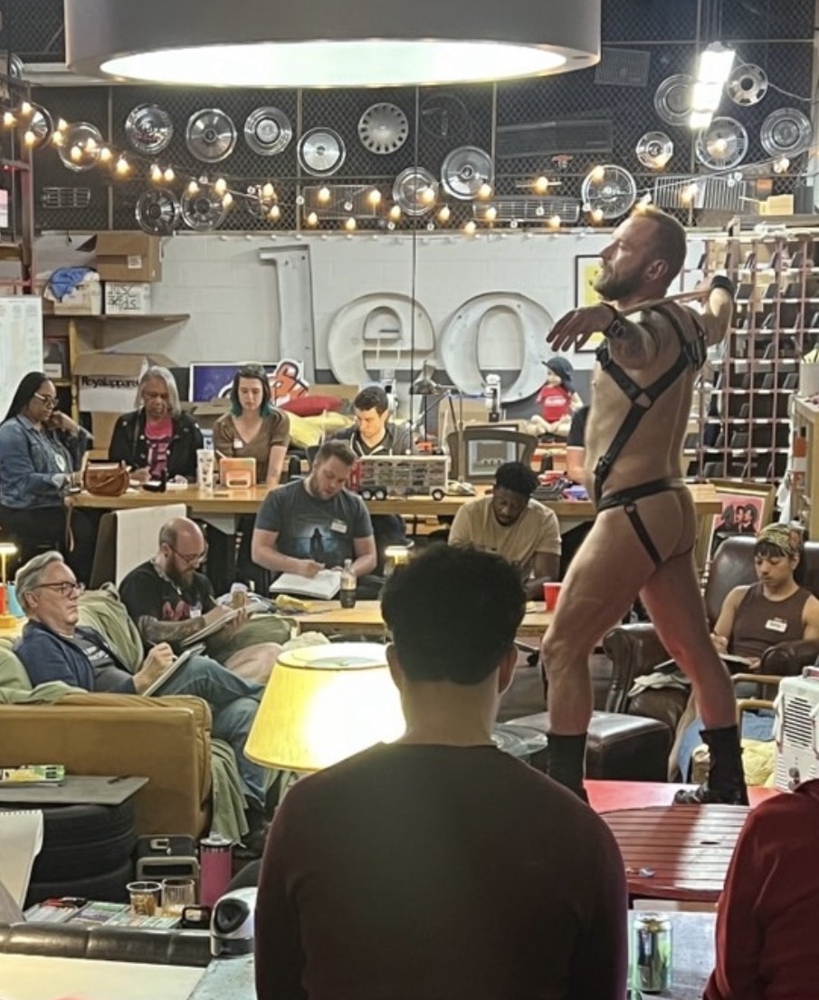
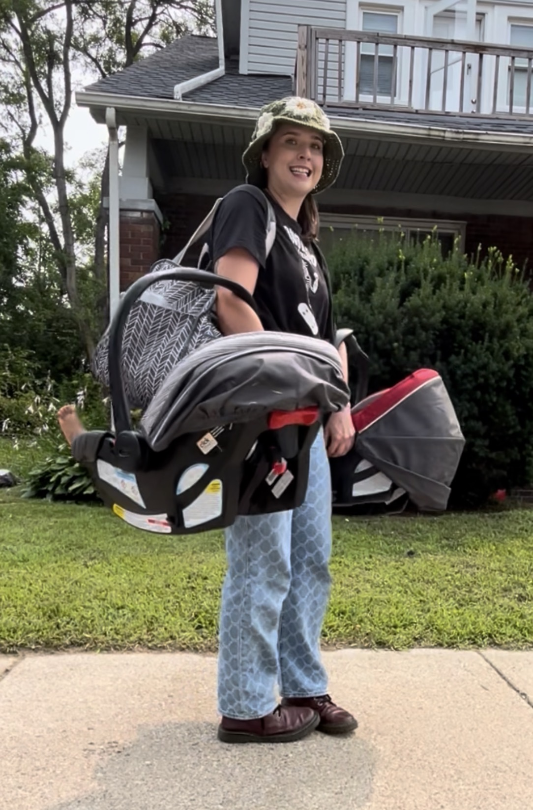

Ph.D. Candidate, Anthropology
ABD and available for hire
jocieosika@wayne.edu
The Merrill Palmer Skillman Institute has been serving children and families in one form or another for over a century. Today, it is a research institute at which I was lucky to be a trainee in the 2024-2025 school year and a fellow in the 2025-2026 and 2026-2027 school years. At MPSI, I have received invaluable interdisciplinary training, including research colloquia, professional development sessions, and mentorship. During my first year as a fellow, I also served as the graduate student organization president.
The Wayne State Humanities Center is a multidisciplinary department in the division of research that supports select faculty and students in the humanities. I was awarded the competitive 2026-2027 Humanities Center dissertation writing fellowship.
AGSO is the governing body of Wayne State's graduate program in anthropology. I served as a board member during the 2023-2024 school year. During that time, I participated in meetings, planned events, coordinated all AGSO media, and helped plan the annual Transformation conference.

NHBS is a national-level, CDC-funded public health project in HIV that conducts large scale surveys aimed at tracking HIV cases and related practices in several different states. Before the survey, they perform a qualitative formative assessment to help sensitize them to the local community. I was hired in 2026 as the formative assessment ethnographer to help build an understanding of the local MSM (men who have sex with men) community ahead of their data collection period.

From May 2023 to December 2024, I worked as a Visit Technician at a local nonprofit foster care agency in Michigan. I began this position to sensitize me to pertinent issues at play in Michigan child welfare during my doctoral research design. My time at the agency has proven very valuable to my research from the questions I was inspired to ask to the trust that I built. I have chosen not to name the agency, as I maintain a close research relationship with them and do not want to endanger anonymity.